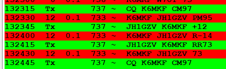

Just for chuckles and grins, I turned the K3 down to 1W RF output and called CQ on 40M FT8 with my SteppIR 3L at about 40’.  Got a -14 signal report from my first JA QSO, and they keep answering my CQs. Pretty cool – just like ultra-light fishing which used to enjoy. - 73 and good DX de Mike, K6MKF, NCDXC Life Member |